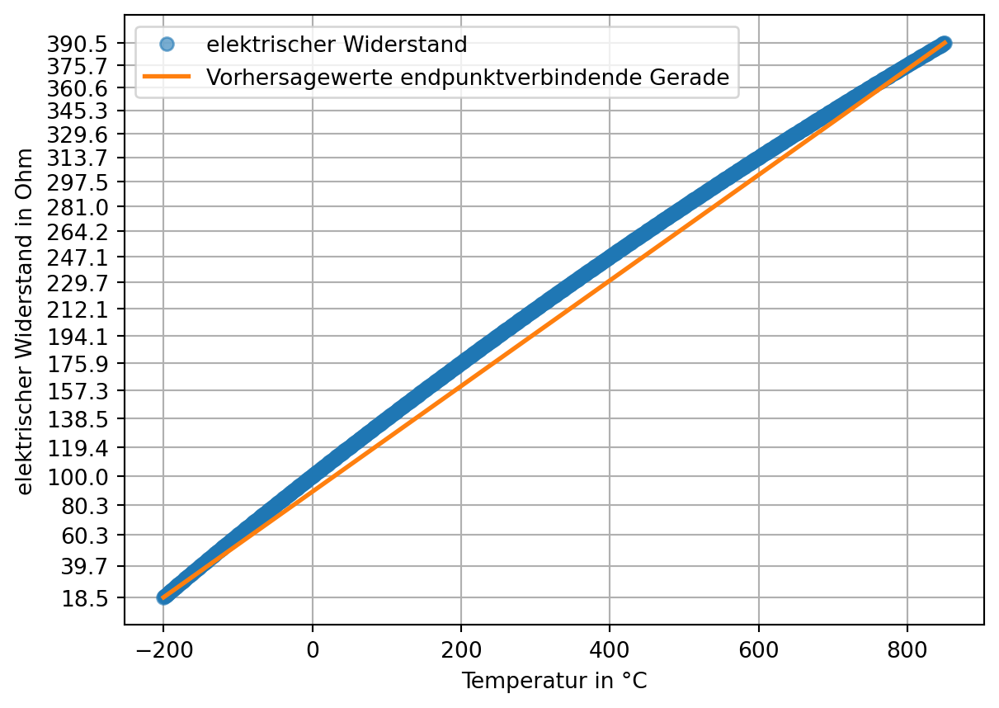
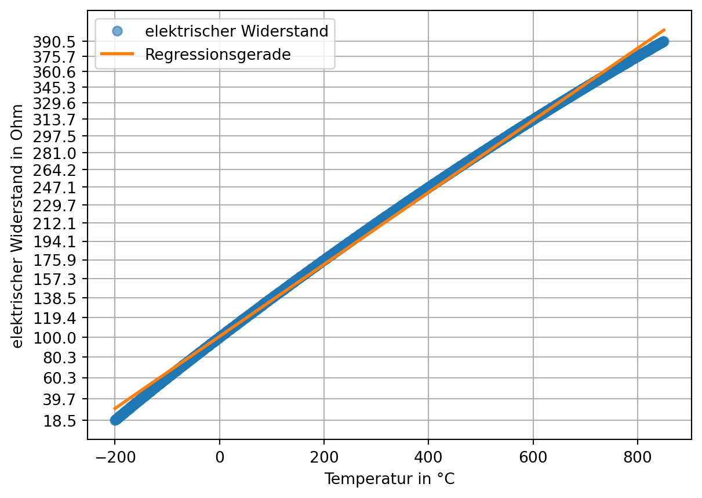

Die Genauigkeit von Messungen wird durch die Korrektion systemtischer Messabweichungen verbessert. In diesem Kapitel werden typische Fehlerarten bei Messungen und praktische Methoden der Kalibrierung vorgestellt:
additive Fehler,
multiplikative Fehler und
Nichtlinearität.
In diesem Abschnitt greifen wir die etablierten Begriffe auf, auch wenn die Fehler besser als systematische Messabweichungen bezeichnet werden sollten.
Als Übung das gekochte Eis verwenden. (man muss den Nullpunkt und 100 Grad als Referenzwerte nehmen). Das Problem ist, dass das Eiskochen auch nichtlinear ist (ab 50 °C). Beachten, man hat keinen Referenzwert für den Nullpunkt (der liegt bei -273 °C), man muss also mit linearer Regression schätzen. Vermutlich muss man dafür nicht in Kelvin umrechnen, wegen der absoluten Verschiebung. –> Dass man nicht verschieben braucht, haben wir ja für die Berechnung ohne Messwerte für den Nullpunkt gezeigt.
Aber stimmt das auch für Temperatursensoren, die gar nicht bis zum absoluten Nullpunkt messen können? Vielleicht indem man die untere Grenze des Messbereichs als Nullpunkt konzipiert.
Die Nichtlinearität ist kein Fehler des Sensorsystems, sondern ein physikalischer Effekt. Wie gehen wir damit um? –> man könnte sagen, dass der Effekt über den linear geschätzten Spannfehler approximiert wird. Zwischen nichtlinearer Messwertekurve und dem linear geschätzten Spannfehler entsteht dann ein Linearitätsfehler
Das Problem ist, dass die Daten bereinigt werden müssen, ohne sie zu interpolieren oder zu glätten –> mit linearem Trend und sd arbeiten oder auf den Baustein datenfitting und datenoptimierung verweisen.
6.1 Kalibrieren und Justieren
Die Korrektion systemtischer Messabweichungen kann auf zwei Arten geschehen: durch Kalibrierung oder Justierung des Messgeräts.
Mit dem Begriff Kalibrierung wird im engeren Sinn die Ermittlung des Zusammenhangs zwischen Messwerten bzw. ihres arithmetischen Mittelwerts und dem vereinbarten richtigen Wert der Messgröße bezeichnet.
Definition 6.1: Kalibrierung nach DIN 1319
“Ermitteln des Zusammenhangs zwischen Meßwert […] oder Erwartungswert […] der Ausgangsgröße […] und dem zugehörigen wahren […] oder richtigen Wert […] der als Eingangsgröße vorliegenden Meßgröße für eine betrachtete Meßeinrichtung […].” (Deutsches Institut für Normung 1995, 22)
Im weiteren Sinn ist mit Kalibrierung auch “die Erstellung einer Korrektionstabelle […], die Ermittlung von Kalibrierfaktoren oder einer (empirischen) Kalibrierfunktion” (Deutsches Institut für Normung 1995, 22) gemeint. Dabei handelt es sich um Methoden, um mit systematischen Messabweichungen behaftete Messwerte zu korrigieren, ohne das Messgerät zu verändern.
Im Unterschied dazu verändert die Justierung das Messgerät dauerhaft.
Definition 6.2: Justierung nach DIN 1319
“Einstellen oder Abgleichen eines Meßgeräts […], um systematische Meßabweichungen […] soweit zu beseitigen, wie es für die vorgesehene Anwendung erforderlich ist.” (Deutsches Institut für Normung 1995, 22)
6.2 Kalibriermethoden nach DIN 1319
In der DIN 1319 werden drei Kalibriermethoden genannt, die hier nur kurz behandelt werden:
Korrektionstabelle,
Ermittlung von Kalibrierfaktoren und
Ermittlung einer (empirischen) Kalibrierfunktion.
Welche Methode verwendet wird, hängt von dem Anwendungsbereich, der Datenverfügbarkeit sowie von der gewünschten Genauigkeit ab.
Methode
Anwendung bei …
Vorteile
Nachteile
Korrektionstabelle
nichtlinear, schwer modellierbar
einfach zu nutzen
viele Daten erforderlich, sonst Interpolation ungenau
Kalibrierfaktoren
lineare Abweichung
leicht umsetzbar
unzureichend bei Nichtlinearität
Kalibrierfunktion
nichtlinear, modellierbar
sehr genau
höherer Aufwand
Korrektionstabelle
Mit der Korrektionstabelle können beliebige Korrektionen dargestellt werden, sofern ausreichend Datenpunkte verfügbar sind. In Kapitel 6.6.1 werden wir ein Beispiel für eine Korrektionstabelle kennenlernen.
Ermittlung von Kalibrierfaktoren
Ein Kalibrierfaktor kann angegeben werden, wenn eine konstante relative Abweichung vorliegt. Ein Beispiel aus der Praxis ist hier auf Seite 1 zu finden.
Der Nullpunktfehler beschreibt die Abweichung der Messgröße von Null, wenn der gesuchte Wert tatsächlich Null ist. Der Nullpunktfehler wird auch als Nullabgleich, Nullpunktverschiebung oder Offsetfehler bezeichnet. Der Nullpunktfehler ist konstant und wirkt additiv auf jeden Messwert. (ics Schneider Messtechnik)
Hier sind die Berechnungen noch nicht korrekt. Mit einfachen Werten scheint es zufällig zu passen, mit verschobenen Werten nicht mehr. Das korrekte Vorgehen steht beim Test mit Kelvin.
Der Nullpunktfehler kann leicht bestimmt werden, wenn Messwerte für den Nullpunkt vorliegen und der wahre Wert bekannt ist. (Wenn außerdem bekannt ist, dass keine weiteren systematischen Messabweichungen vorliegen, kann der Nullpunktfehler über einen beliebigen wahren Referenzwert bestimmt werden.) Für die zur grafischen Darstellung angelegten Daten ist dies der Fall.
Wenn keine Daten für den Nullpunkt vorliegen, kann der Nullpunktfehler mit linearer Regression aus mindestens zwei bekannten Referenzpunkten geschätzt werden. Dazu wird eine ideale Kennlinie geschätzt und ihr Schnittpunkt mit der y-Achse bestimmt. Ebenso wird für die Messwerte eine lineare Funktion geschätzt. Aus der Differenz der y-Achsen-Schnittpunkte kann der Nullpunktfehler geschätzt werden.
# bekannte Referenzpunkte x1 =4x2 =8y1 = messgröße[x1]y2 = messgröße[x2]# ideale Kennlinie schätzen# print(lineares_modell) gibt intercept + slope zurücklm_kennlinie = poly.polyfit(x = [x1, x2], y = [y1, y2], deg =1)print("Der erste Wert ist der Schnittpunkt der idealen Kennlinie mit der y-Achse:", lm_kennlinie.round(2), sep ="\n")# lineare Funktion der Messwerte schätzen## man benötigt mindestens 2 Punkte lm_messwerte = poly.polyfit(x = [x1, x2], y = [messwerte[x1], messwerte[x2]], deg =1)print("Die aus 2 Messwerten geschätzte lineare Funktion:", lm_messwerte.round(2), sep ="\n")## die Schätzung über alle Messwerte ist zuverlässigerlm_messwerte2 = poly.polyfit(x = np.arange(messwerte.size), y = messwerte, deg =1)print("Die aus allen Messwerten geschätzte lineare Funktion:", lm_messwerte2.round(2), sep ="\n")print("\nDie Differenz zwischen dem geschätzten Nullpunkt der Messwerte und dem\ngeschätzten Nullpunkt der idealen Kennlinie ist der Nullpunktfehler:", (lm_messwerte[0] - lm_kennlinie[0]).round(2), sep ="\n")
Der erste Wert ist der Schnittpunkt der idealen Kennlinie mit der y-Achse:
[-0. 1.]
Die aus 2 Messwerten geschätzte lineare Funktion:
[4. 1.]
Die aus allen Messwerten geschätzte lineare Funktion:
[4. 1.]
Die Differenz zwischen dem geschätzten Nullpunkt der Messwerte und dem
geschätzten Nullpunkt der idealen Kennlinie ist der Nullpunktfehler:
4.0
Grafisch wird das Vorgehen deutlich.
# lineare Funktionen berechnengeschätzte_ideale_kennlinie = poly.polyval(x = np.arange(messwerte.size), c = lm_kennlinie)lineare_funktion_messwerte = poly.polyval(x = np.arange(messwerte.size), c = lm_messwerte)# plotten## Punkteplt.plot([x1, x2], [y1, y2], marker ='o', linestyle ='none', color ='C0', label ='bekannte Referenzwerte')plt.plot([x1, x2], [messwerte[x1], messwerte[x2]], marker ='^', linestyle ='none', color ='C1', label ='Messwerte an Referenzpunkten')## Linienplt.plot(np.arange(messwerte.size), geschätzte_ideale_kennlinie, marker ='none', linestyle ='dashed', color ='C0', label ='ideale Kennlinie')plt.plot(np.arange(messwerte.size), lineare_funktion_messwerte , marker ='none', linestyle ='dashed', color ='C1', label ='lineare Funktion Messwerte')plt.plot([0, 0], [messgröße[0], messwerte[0]], linestyle ='dashed', label ='Nullpunktfehler', color ='red')plt.plot([4, 4], [messgröße[4], messwerte[4]], linestyle ='dashed', color ='red')plt.plot([8, 8], [messgröße[8], messwerte[8]], linestyle ='dashed', color ='red')plt.legend()plt.show()
gibt es weitere Methoden?
Nullpunktfehler korrigieren
Der Nullpunktfehler wird durch Subtraktion von den Messwerten korrigiert. Das Vorgehen zur Ermittlung des Nullpunktfehlers wird zur Illustration im folgenden Beispiel mit anderen Werten wiederholt.
# Daten erzeugenmessgröße = np.arange(0, 11) +5messwerte = messgröße +2.5# bekannte Referenzpunkte x1 =2x2 =5y1 = messgröße[x1]y2 = messgröße[x2]# ideale Kennlinie schätzenlm_kennlinie = poly.polyfit(x = [x1, x2], y = [y1, y2], deg =1)# lineare Funktion der Messwerte schätzen## die Schätzung über alle Messwerte ist zuverlässigerlm_messwerte = poly.polyfit(x = np.arange(messwerte.size), y = messwerte, deg =1)# Nullpunktfehler bestimmennullpunktfehler = lm_messwerte[0] - lm_kennlinie[0]print(f"Der Nullpunktfehler beträgt: {nullpunktfehler.round(2)}")# Nullpunktfehler korrigierenkorrigierte_messwerte = messwerte - nullpunktfehler
Der Nullpunktfehler beträgt: 2.5
Übung Nullpunktfehler
Daten von Andres Fahrradsensor misst immer 3 Grad zu viel, weil das Display Abwärme macht (Offset-Fehler). Hier sind die Werte mit Display aus die bekannten Referenzwerte.
6.4 Multiplikative Fehler: Der Spannfehler
Spannfehler scheint eine absolut ungebräuchliche Bezeichnung zu sein
Als Spannfehler wird ein über den Wertebereich (die Spanne) der gesuchten Größe zu- oder abnehmender Fehler bezeichnet. Die relative Messabweichung \(\delta\) ist dabei konstant, die absolute Messabweichung \(\Delta\) abhängig vom Messwert. (ics Schneider Messtechnik)
Der Spannfehler kann geschätzt werden, wenn Referenzwerte bekannt sind. Mit den vollständigen Beispieldaten geht es leicht (in dem Beispiel wird eine Warnung wegen Division durch 0 unterdrückt):
Bei nur punktuellen Daten wird eine ideale Kennlinie geschätzt, mit der der Spannfehler geschätzt werden kann.
# bekannte Referenzwertex1 =4x2 =8y1 = messgröße[x1]y2 = messgröße[x2]# ideale Kennlinie schätzenlm_kennlinie = poly.polyfit(x = [x1, x2], y = [y1, y2], deg =1)geschätzte_ideale_kennlinie = poly.polyval(x = np.arange(messwerte.size), c = lm_kennlinie)# lineare Regression der Messwertelm_messwerte = poly.polyfit(x = np.arange(messwerte.size), y = messwerte, deg =1)# Ausgabeprint(f"Der Anstieg der Messwerte: {round(lm_messwerte[1], 2)}")print(f"Der Anstieg der idealen Kennlinie: {round(lm_kennlinie[1], 2)}")
Der Anstieg der Messwerte: 0.67
Der Anstieg der idealen Kennlinie: 1.0
Grafisch wird das Vorgehen deutlich.
# Punkte und Linienplt.plot([0, 10], [messgröße[0], messgröße[-1]], marker ='none', linestyle ='dashed', color ='C0', label ='ideale Kennlinie')plt.plot([x1, x2], [y1, y2], marker ='o', linestyle ='none', color ='C0', label ='bekannte Referenzwerte')plt.plot(messwerte, marker ='^', color ='C1', label ='gemessene Werte')# füllenplt.fill_between(x = np.arange(messwerte.size), y1 = messgröße, y2 = messwerte, alpha =0.2, label ='Spannfehler')plt.legend()plt.show()
Spannfehler korrigieren
Der Spannfehler wird durch die Division der Messwerte durch 1 + Spannfehler korrigiert. Das Vorgehen zur Ermittlung des Spannfehlers wird zur Illustration im folgenden Beispiel mit anderen Werten wiederholt.
Absolute und multiplikative Abweichungen können gemeinsam auftreten. In diesem Beispiel wird die absolute Messabweichung über den dargestellten Wertebereich kleiner, da der Nullpunktfehler mit positivem Vorzeichen und der Spannfehler mit negativen Vorzeichen auftreten.
Aus mindestens zwei bekannten Referenzpunkten können mit linearer Regression der Nullpunkt- und der Spannfehler geschätzt werden. In der linearen Regression wird ein bei 0 beginnender Index für die x-Werte verwendet. Um den Nullpunktfehler korrekt ermitteln zu können, wird dieser Index um den geschätzten wahren Nullpunkt verschoben.
Das liegt daran, dass wenn die Messgröße keinen Wert für 0 enthält, auch der Spannfehler auf den Wert mit dem Index 0 angewendet wird. Deshalb muss erst der Spannfehler korrigiert werden. (Wenn die Werte 0 beinhalten, dann merkt man nicht, dass dieser Schritt nötig ist.)
Wahre Werte:
[ 7 8 9 10 11 12 13 14 15 16 17]
Messwerte:
[ 8.66666667 9.33333333 10. 10.66666667 11.33333333 12.
12.66666667 13.33333333 14. 14.66666667 15.33333333]
erst Nullpunktfehler, dann Spannfehler korrigiert
[ 7. 8. 9. 10. 11. 12. 13. 14. 15. 16. 17.]
erst Spannfehler, dann Nullpunktfehler korrigiert
[ 9. 10. 11. 12. 13. 14. 15. 16. 17. 18. 19.]
Vorgehen Arnold
a = 1.5
b = -6.0
a * messwerte + b
[ 7. 8. 9. 10. 11. 12. 13. 14. 15. 16. 17.]
Simones Vorgehen führt zu korrekt kalibrierten Messwerten. Die Variable a ist der Korrekturfaktor für den Spannfehler. Aber die Variable b hat keine inhaltliche Bedeutung. Aber warum funktioniert es dann?! Weil b die Nullpunktkorrektur ist, wenn erst der Spannfehler korrigiert wird.
Das hat etwas mit der Konstruktion der Daten bzw. der Korrektur zu tun. b ist die Korrektur des Nullpunktfehlers * Spannfehler. Das heißt aus der Arnoldformel kann der Spannfehler als \(-1 * {b \over a}\) ermittelt werden.
Mein Vorgehen ist flexibler, weil aus beliebigen Punkten, statt Minimum und Maximum geschätzt werden kann.
6.6 Nichtlinearität: Linearitätsfehler
Beispiel Pt100
Das Pt100 ist ein Platin-Widerstandsthermometer (Pt = Platin) mit einem definierten Widerstandswert von \(100 \Omega\) bei einer Temperatur von 0°C (daher der Name Pt100). Der Widerstand eines Pt100 steigt mit der Temperatur. Bei 100 °C beträgt der Widerstand beispielsweise \(138,51 \Omega\). Der Zusammenhang zwischen der Eingangsgröße, dem elektrischen Widerstand, und der so gemessenen Temperatur ist jedoch nur näherungsweise linear.
Die Eigenschaften eines Pt100 Widerstandes sind in der Norm DIN EN IEC 60751 (Deutsches Institut für Normung 2023) festgelegt. Dort wird der Zusammenhang durch zwei Polynome für den Temperaturbereich von -200 °C bis 0 °C und für den Temperaturbereich von 0 °C bis 850 °C beschrieben.
Für den Temperaturbereich –200 °C bis 0 °C: \[
R_T = R_0 \cdot \left(1 + A \cdot T + B \cdot T^2 + C \cdot (T - 100 ^\circ\text{C}) \cdot T^3\right)
\]
Für den Temperaturbereich von 0 °C bis +850 °C: \[
R_T = R_0 \cdot \left(1 + A \cdot T + B \cdot T^2\right)
\]
Dabei gilt:
\(R_T\) ist der Widerstand bei der Temperatur \(T\),
\(R_0\) ist der Widerstand bei \(0^\circ\text{C}\),
\(A\), \(B\) und \(C\) sind Konstanten, die den spezifischen Charakter des Sensors beschreiben. Dabei sind:
Im Anhang der Norm befinden sich Tabellen, die die Beziehung zwischen Temperatur und gemessenem Widerstand wiedergeben. Das Format der Tabellen erlaubt es, aus einem gemessenen Widerstandswert schnell die gemessene Temperatur zu ermitteln. Dazu sind in der ersten Spalte die Temperaturen in Zehnerschritten, in den folgenden zehn Spalten die Einerstelle eingetragen. Für Temperaturen unter Null ist die Einerstelle jeweils zu subtrahieren (erkennbar am Vorzeichen \(-\)), für Temperaturen über Null dagegen zu addieren (erkennbar am Vorzeichen \(+\)). Eine zusammengefasste Darstellung finden Sie zum Beispiel hier.
Die Notation \(t_{90} / °C\) beruht auf der Internationalen Temperaturskala ITS-90 von 1990, die Temperaturen \(T_{90}\) in Kelvin und \(t_{90}\) in Grad Celsius definiert. Die Notation zeigt also an, dass in der Tabelle Angaben in Grad Celsius stehen. (Deutsches Institut für Normung (2023), S. 10)
Aufgabe Pt100-Tabelle einlesen
Für die Datenanalyse ist das tabellarische Format weniger geeignet. Die hier zusammengefasste Darstellung wurde in zwei CSV-Dateien kopiert. Lesen Sie die Dateien so ein, dass der elektrische Widerstand und die Temperatur jeweils eine aufsteigende Datenreihe bilden (z. B. als Liste, NumPy-Array oder eine Pandas-Datenstruktur). Die Dateipfade lauten:
Es gibt 201 Werte (von -200 bis 0). Die Daten beginnen in der Zeile mit dem Index 1 (wenn die erste Zeile als header eingelesen wird). Diese enthält nur einen Eintrag in der Spalte ‘0’. Die folgenden Zeilen sind von rechts nach links einzulesen. Das Dezimaltrennzeichen ist das ,.
Das Einlesen der Daten von rechts nach links kann auf viele Arten bewerkstelligt werden. Eine einzeilige Lösung beginnt damit, der Methode pd.iloc[::-1] eine negative Schrittweite zu übergeben.
Das führt dazu, dass die Zeilen des DataFrame in umgekehrter Reihenfolge ausgegeben werden. Um die Spalten in umgekehrter Reihenfolge auszugeben, wird der DataFrame mit der Methode pd.T zwei mal transponiert.
print(df.T.iloc[::-1].T)
2 1 0
0 1 2 3
1 4 5 6
Mit der NumPy-Methode np.flatten() kann ein Array in eine eindimensionale Struktur reduziert werden. Dafür wird mit der Methode pd.to_numpy() der DataFrame als NumPy-Array ausgegeben.
Für die Temperaturen oberhalb von 0 Grad kann das Vorgehen vereinfacht werden, da die Datei gleich aufgebaut ist und die Werte aufsteigend sortiert sind.
Es fällt auf, dass die Daten einen Fehlwert enthalten. Die Position des Fehlwerts wird mit zwei Pandas-Methoden bestimmt. pd.diff() gibt die Differenz jedes Werts zu seinem Vorgänger zurück. pd.idxmin() gibt den Zeilenindex (genauer das label) des kleinsten Werts zurück. (Läge der Fehlwert oberhalb der Linie, würde pd.idxmax() verwendet werden.)
# := ist der sog. Walross-Operatorprint(( position_fehlwert := pt100['Ohm'].diff().idxmin() ))print(pt100.iloc[list(range(position_fehlwert -2, position_fehlwert +3))])
Der korrekte Wert kann aus der DIN-Norm (Deutsches Institut für Normung 2023, 26) abgelesen werden (153,96). Man könnte den Wert aber auch interpolieren (siehe Beispiel).
Beispiel 6.2: Interpolation
Die einfachste Form der Interpolation ist die lineare Interpolation.
Zwei Methoden zur Quantifizierung der Nichtliniearität sind die Festpunkt- und die Toleranzbandmethode.
Festpunktmethode
Definition 6.3: Festpunktmethode
Die Endpunkte der realen Kennlinie werden durch eine Gerade verbunden. Der Linearitätsfehler ist das Maximum der Abweichung der Kennlinie zu dieser Geraden. (Grote und Feldhusen 2011, W2–3 (S. 1661-1662))
Dazu bestimmen wir zunächst die Vorhersagewerte einer Geraden durch die Endpunkte.
lm = poly.polyfit( x = [pt100['Temperatur'].iloc[0], pt100['Temperatur'].iloc[-1]], y = [pt100['Ohm'].iloc[0], pt100['Ohm'].iloc[-1]], deg =1)print(lm.round(2)) # intercept + slopevorhersagewerte = poly.polyval(x = pt100['Temperatur'], c = lm)plt.plot(pt100['Temperatur'], pt100['Ohm'], marker ='o', linestyle ='', label ='elektrischer Widerstand', alpha =0.6)plt.plot(pt100['Temperatur'], vorhersagewerte, linewidth =2, label ='Vorhersagewerte endpunktverbindende Gerade')plt.yticks(pt100['Ohm'][::50]);plt.xlabel('Temperatur in °C')plt.ylabel('elektrischer Widerstand in Ohm')plt.grid()plt.legend()plt.show()
[89.37 0.35]

Aus der Differenz des gemessenen elektrischen Widerstands und der linearen Vorhersagewerte kann der maximale Linearitätsfehler bestimmt werden.
linearitätsfehler = (pt100['Ohm'] - vorhersagewerte).abs().max()print(f"Linearitätsfehler nach Festpunktmethode: {linearitätsfehler:.2f} Ohm.")
Linearitätsfehler nach Festpunktmethode: 16.43 Ohm.
Toleranzbandmethode
Definition 6.4: Toleranzbandmethode
Bei der Toleranzbandmethode wird eine Gerade so durch die Messpunkte gelegt, dass die Summe der quadrierten Abweichungen der Messpunkte zu dieser Geraden (Methode der kleinsten Quadrate) oder die größte einzelne Abweichung (Tschebyscheff-Approximation) minimiert wird. Die Größe des Linearitätsfehlers ist die maximale senkrechte Entfernung der Kennlinie zu dieser Ausgleichsgeraden. (Grote und Feldhusen 2011, W3 (S. 1662))
Das Prinzip der Methode der kleinsten Quadrate haben wir bereits kennengelernt.
lm = poly.polyfit( x = pt100['Temperatur'], y = pt100['Ohm'], deg =1)print(lm.round(2)) # intercept + slopevorhersagewerte = poly.polyval(x = pt100['Temperatur'], c = lm)plt.plot(pt100['Temperatur'], pt100['Ohm'], marker ='o', linestyle ='', label ='elektrischer Widerstand', alpha =0.6)plt.plot(pt100['Temperatur'], vorhersagewerte, linewidth =2, label ='Regressionsgerade')plt.yticks(pt100['Ohm'][::50]);plt.xlabel('Temperatur in °C')plt.ylabel('elektrischer Widerstand in Ohm')plt.grid()plt.legend()plt.show()
[100.67 0.35]

Aus der Differenz des gemessenen elektrischen Widerstands und der linearen Vorhersagewerte kann der maximale Linearitätsfehler (= das größte Residuum) bestimmt werden.
linearitätsfehler = (pt100['Ohm'] - vorhersagewerte).abs().max()print(f"Linearitätsfehler nach Toleranzbandmethode: {linearitätsfehler:.2f} Ohm.")
Linearitätsfehler nach Toleranzbandmethode: 11.45 Ohm.
Problem: Die Toleranzbandmethode produziert einen Nullpunktfehler.
6.7 Fehlerarten und praktische Kalibriermethoden
Nichtlinearität
Bei einer idealen Messung hängt der gesuchte Wert linear vom gemessenen Wert ab. Viele analoge Sensoren reagieren aufgrund von Materialeigenschaften oder abhängig von der Temperatur nicht linear auf die gemessene Größe. Das heißt, die Messwerte sind nicht direkt proportional zur Messgröße. Dieser sogenannte Linearitätsfehler muss korrigiert werden, um genau zu messen.
Dafür gibt es zwei Möglichkeiten. Zum einen können nicht lineare Verfahren zur Parameterschätzung verwendet werden, was im Methodenbaustein Datenfitting und Datenoptimierung behandelt wird. Zum anderen kann der Liniearitätsfehler korrigiert werden, um mit den leichter zu handhabenden linearen Verfahren der Parameterschätzung arbeiten zu können. Die Korrektion von Linearitätsfehlern wird in diesem Kapitel behandelt.
6.8 Weitere
Hysterese: Verzögerung zwischen Änderung des Wertes und Änderungsgeschwindigkeit des Messwerts Drift: Rauschen:
6.9 Gemeinsames Auftreten in Verbindung mit Nichtlinearität
6.10 Resterampe
(weitere Fehlerquellen: Hysterese, Drift, Rauschen oder Nullpunktverschiebung)
Methoden zur Korrektur: Wo ist die Variablentransformation, um eine lineare Parameterschätzung durchzuführen?
Erstellung einer Kalibrierkurve/Tabelle: Der Sensor wird bei einer Reihe von bekannten Werten gemessen (Kalibrierpunkte). Diese Punkte werden verwendet, um eine individuelle Kurve oder Tabelle zu erstellen, die das tatsächliche Verhalten des Sensors darstellt.
Anwendung mathematischer Korrekturen:
Nichtlineare Regression: Eine Funktion (z. B. Polynom) wird durch die Kalibrierdaten angepasst. Die Differenz zwischen Messwerten und der Funktion wird minimiert, um die bestmögliche Anpassung zu erzielen. Diese Methode wird im Methodenbaustein Datenfitting und Datenoptimierung gezeigt.
-Spezifische Koeffizienten: Für bestimmte Sensortypen gibt es Standardmodelle, die mit speziellen Koeffizienten verwendet werden.
- ITS-90 und Callendar-van-Dusen-Koeffizienten: Für die Kalibrierung von Platin-Sensoren.
- Steinhart-Hart-Koeffizienten: Eine gängige Methode für Thermistoren zur Berechnung der Temperatur.
Es sollten ausreichend viele Kalibrierpunkte über den gesamten Messbereich erfasst werden, um eine genaue Abbildung der Nichtlinearität zu gewährleisten.
Fehlerkompensation: Durch die Korrektur werden Nullpunkt- und Spannfehler mitberücksichtigt und die Genauigkeit des Sensors über seinen gesamten Messbereich hinweg verbessert
Deutsches Institut für Normung. 1995. „Grundlagen der Meßtechnik - Teil 1: Grundbegriffe“. DIN Media. https://doi.org/10.31030/2713411.
———. 2023. „Industrielle Platin-Widerstandsthermometer und Platin-Temperatursensoren (IEC 60751:2022). Deutsche Fassung EN IEC 60751:2022“. DIN Media. https://doi.org/10.31030/3405985.
Grote, Karl-Heinrich, und Jörg Feldhusen, Hrsg. 2011. Dubbel: Taschenbuch für den Maschinenbau. 23. Aufl. Springer Berlin, Heidelberg. https://doi.org/10.1007/978-3-642-17306-6.